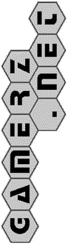

 |
Tanbo3D RulesCopyright (c) 1995 Mark Steere <mark@tanbo.com> Tanbo3D extends the game of Tanbo into three dimensions.
III THREE DIMENSIONAL TANBO
============================
The rules of 3D Tanbo are exactly the same as the rules of 2D Tanbo,
except it's played in three dimensions instead of two.
For example:
1. To make a move, you must connect a new stone to exactly one
stone already on (in) the board.
2. The expanded root will kill all of the roots it bounds, unless
the expanded root is itself bounded. In this case, only the
expanded root is removed.
The following diagram shows the 5x5x5 cube that is tanbo3d.
Players express their moves as "XYZ" coordinates. For example, the
center point of the cube is 333.
Z
tanbo3d game: 100 rrognlie (black #) vs mr.tan (white O)
_____________ _____________ _____________ _____________
/| /| /| /| /
/ | / | / | / | / 5
/ O | / O | / `O'| / . | / # 4
/ . . | / . . | / . . | / . . | / . . 3
/ # . . | / {#}. . | / . . . | / . . . | / . . . 2
/ # . . . | / . . . . | / . . . . | / . . . . | / . . . . 1
| # . , . # |_| . . , . . |_| . . , . . |_| . . , . . |_| O . , . O
| . . . . / | . . . . / | . . . . / | . . . . / | . . . . /
| . . . / | . . . / | . . . / | . . . / | . . . /5
| . . / | . . / | . . / | . . / | . . /4
| O / | . / | . / | . / | # /3
| / | / | / | / | /2
1/____________2/____________3/____________4/____________5/1 _____X
Recent Moves Moves Stones Roots
# O # O # O # O /
--- --- --- --- --- --- --- --- -Y
125 255 3 2 7 6 4 4
135 355
235
|